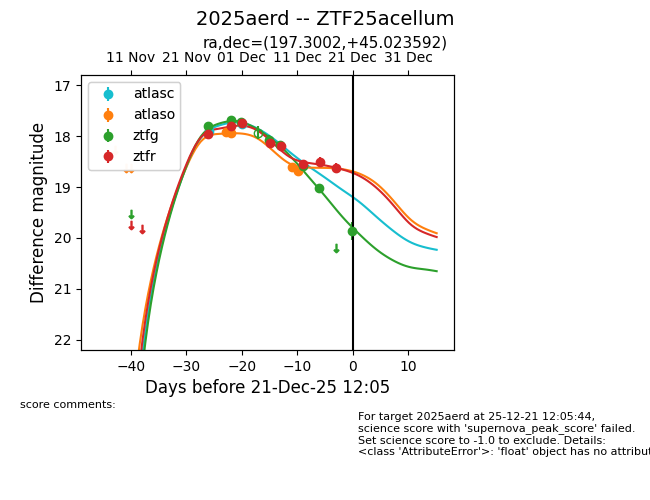
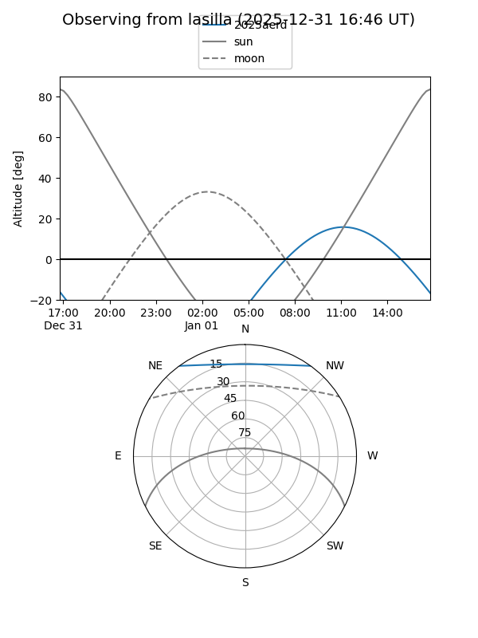
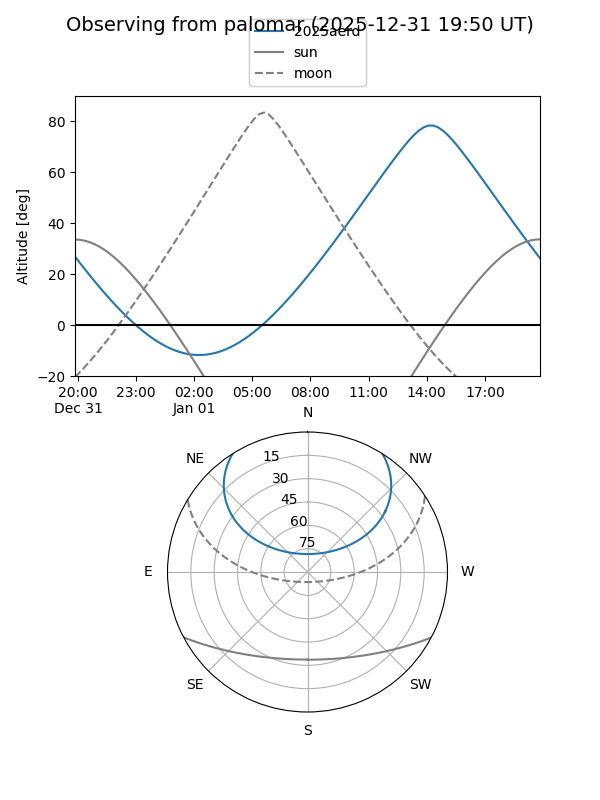

2025aerd
Target 2025aerd at 2025-12-23 12:03
Aliases and brokers:
FINK: fink-portal.org/ZTF25acellum
Lasair: lasair-ztf.lsst.ac.uk/objects/ZTF25acellum
ALeRCE: alerce.online/object/ZTF25acellum
TNS: wis-tns.org/object/2025aerd
YSE: ziggy.ucolick.org/yse/transient_detail/2025aerd
alt names
ZTF25acellum (ztf,fink_ztf)
2025aerd (tns,yse)
Coordinates:
equatorial (ra, dec) = 197.3002,+45.02359
equatorial (HMS+DMS) = 13:09:12.05,+45:01:24.93
galactic (l, b) = (112.8644,+71.75582)
Flags:
Photometry:
last atlasc=17.76, atlaso=18.69, ztfg=19.87, ztfr=18.80
2 atlasc, 4 atlaso, 8 ztfg, 9 ztfr detections
Lightcurve

Visibility


Additional plots